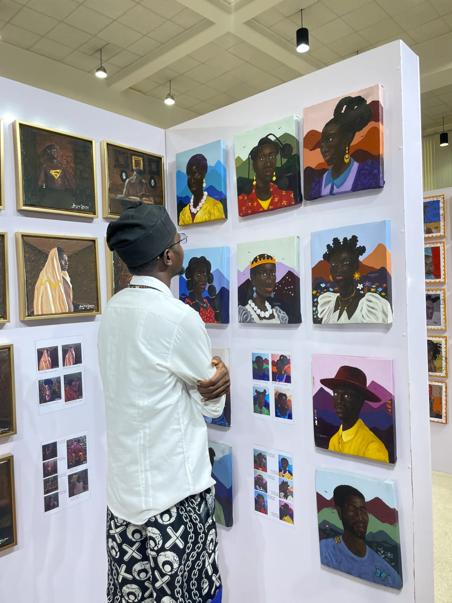
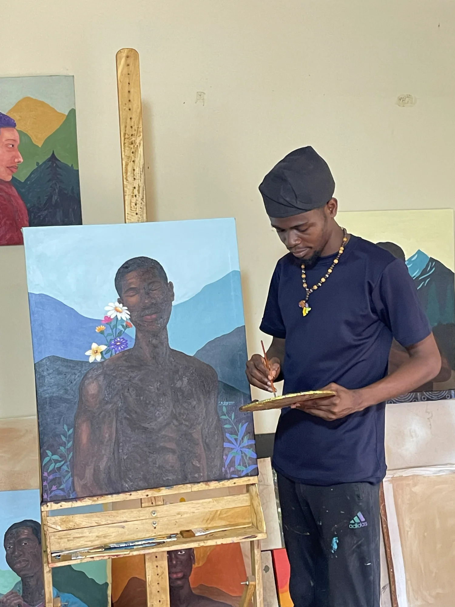
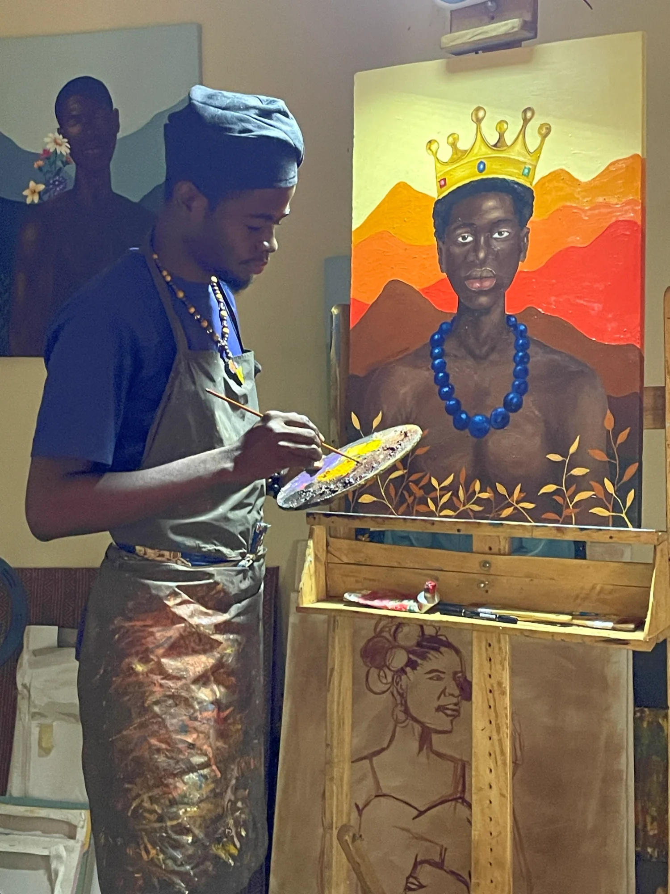
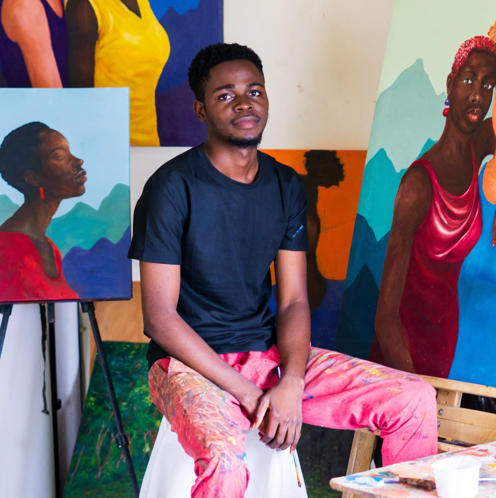
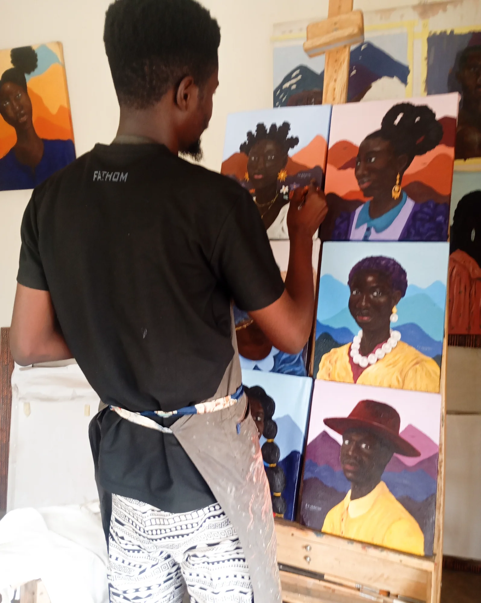
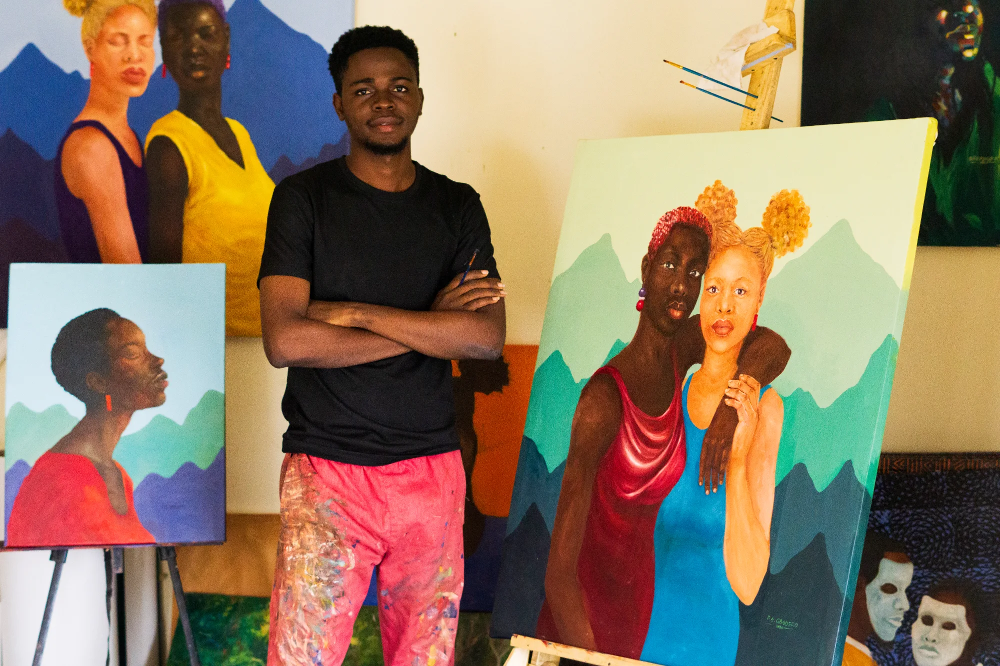

CONTEMPORARY NIGERIAN VISUAL ARTIST
Art that gives
the unseen
a voice.
Through human connection, cultural identity and inner resilience, Faith's work explores the beauty of shared stories — the hopes, struggles and strength that shape us.

ABOUT THE ARTIST
Faith Ayooluwa Gbadero
Faith Ayooluwa Gbadero is a contemporary Nigerian visual artist and figurative painter based in Oyo State, Nigeria. His practice uses painting as a platform for intellectual discourse, moral reflection and social commentary.
Influenced by African cultural narratives and lived experiences, his work combines minimalism and symbolism to explore human connection, social inclusion, hope, empathy and resilience.
Based inOyo State, Nigeria
PracticeFigurative painting · Oil · Acrylic
EducationFine Arts · Painting · Obafemi Awolowo University
ThemesIdentity · Connection · Culture · Resilience
FAITH GBADERO · AVAILABLE WORKS
The 2026 Collection
Browse by series, select a painting, then email Faith to ask about buying it.
Showing all 41 artworks.

ARTWORK DETAIL
Love & Bond II
A meditation on acceptance, inclusion and the bonds formed when people from different backgrounds meet. The intertwined figures express unity, respect and the strength found in shared humanity.
Inquire About This Work →THE CREATIVE PROCESS
Studio / Behind the Scenes
A glimpse into Faith’s studio and the world surrounding his paintings.




.webp)

DIGITAL ARCHIVE
Images
FOLLOW THE JOURNEY
Connect With Faith
Explore exhibitions, new works, studio moments and professional profiles across the artist's public platforms.
START A CONVERSATION
Have a question, collaboration or artwork inquiry?
Send a message directly to Faith using the form.